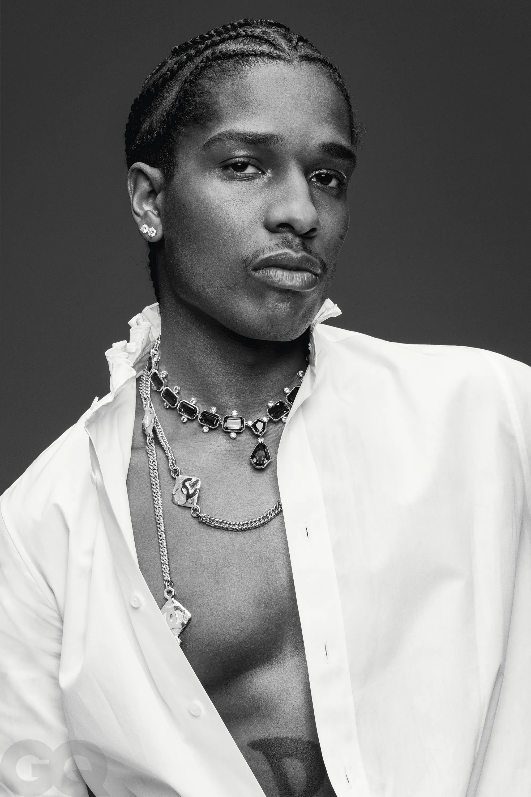
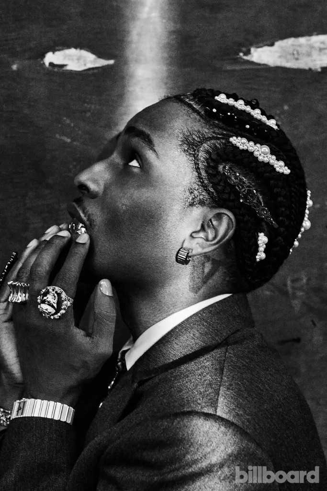
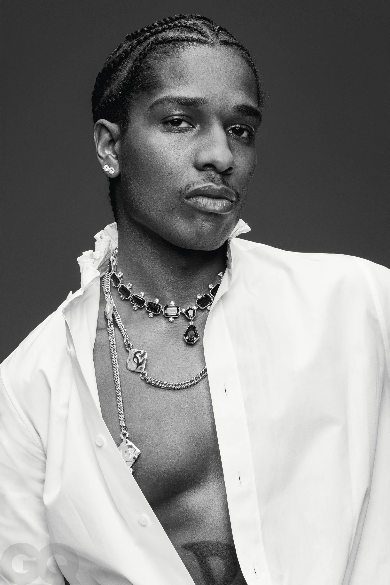
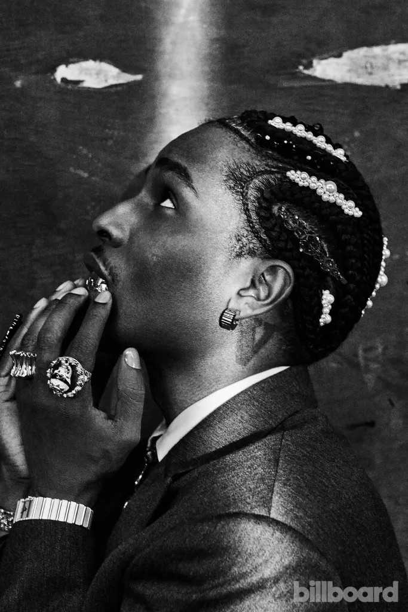

A$AP Rocky
Information
A$AP Rocky (born Oct. 3, 1988) is an American rapper from Harlem, known for his work with the hip-hop collective A$AP Mob. His breakthrough came in 2011 with the hit song “Peso” and the mixtape Live. Love. A$AP. His debut album Long. Live. A$AP (2013) went double platinum. His second album, At. Long. Last. A$AP (2015), was also successful. He has won several awards, including BET and MTV awards, and has two Grammy nominations. His fourth album, Don't Be Dumb, is due in 2024.

 

FAV ALBUM


FAV ALBUM
3 FACTS ABOUT HIM
1. Virgil Abloh was one of his earliest supporters:
Virgil Abloh, known for his cultural influence, recognized A$AP Rocky and his crew early on, even before they made a mark in the fashion world. Rocky shared a memorable moment in his speech at the Fashion Show & Style Awards, recalling how Abloh identified them as "those Harlem kids, the trendy ones." Surprised by the recognition, Rocky later enlisted Abloh to creatively direct his debut album and tour.
2. A$AP Rocky thinks celebrities ruined fashion: If there's one thing that Rocky hates, it's a poseur. Especially when it comes to fashion. In an interview with Fast Company, the rapper states, "Celebrities ruined fashion for me. I used to put a lot of thought into what I was wearing and then...all my favorite brands were being bought and worn by the biggest poseurs and celebrities with terrible taste." Well over the hype, Rocky goes on to say that he's "over it," and he's "just not into the whole name brand thing so much."
Want to stay in the loop?We've got you coveredDownload the
Highsnobiety App now
3. He's a fan of retro video games: A$AP Rocky surprised both gamers and hip-hop fans when his track "Shittin Me" appeared in the *Need for Speed* trailer, where he also made an appearance as a non-playable character. In a *Rolling Stone* interview, Rocky shared his love for gaming, which began with Sega Genesis and Nintendo 64, and his nostalgia for PlayStation's classic game *PaRappa the Rapper*. He recalled getting the PlayStation demo pack and even performed a rendition of the *PaRappa* theme.